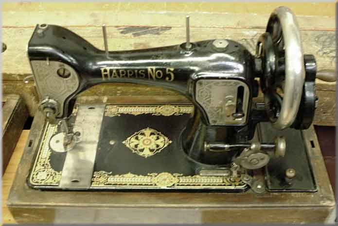

Harris #5
Maker: Standard Sewing Machine Company
Model: Hexagon
Serial #: X20604
Date: 1920s
Note: This model continued to be produced by Singer for a time, following their takeover of the Standard Sewing Machine Company in the 1930's, and had the designation Singer Model 128-8

Picture courtesy of Claire Sherwell
©
Alan Quinn 2001. All Rights Reserved
This page may not be reproduced or distributed in part or in whole without the prior written permission of the copyright owner